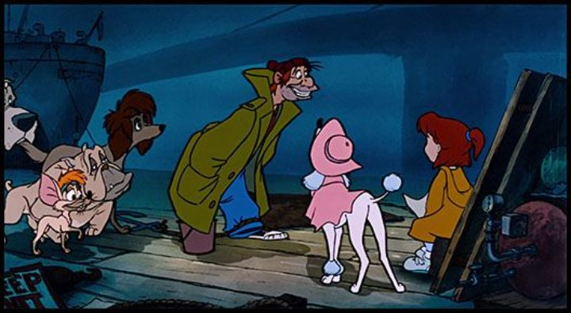

Hey, who wants another Disney movie about cartoon dogs and cats? We had "Lady and the Tramp," "101 Dalmations," "The Aristocats," but then nothing for a couple decades (we got a bunch of movies about mice instead). It'd had been a while, and Disney is so good at animating pets, that maybe it was a good idea for them to go back to the idea... again... with "Oliver & Company" in 1988. To be fair, "Oliver" has a few new twists (pun intended) to engage modern audiences, and is a fun adventure. But somehow, it was always one of the more forgettable ones for me, and not a movie I went back to often as a kid. Based on the name, you could guess that "Oliver & Company" is a (very loose) adaption of "Oliver Twist." But with cats and dogs taking most of the human roles. And it happens to be set in modern-day New York City, a loving tribute to the Big Apple. The result is something that feels like a cross between "Lady and the Tramp" and "The Rescuers," but with a more modern flair and modern songs. The thing is, I didn't have a big attatchment to "Lady" or "Rescuers," which might be why my opinion on "Oliver" is less ethusiastic than other Disney movies.We start early in Oliver (the cat)'s life, and watch his big adventure over the course of a few days. At first, he's one of many kittens being offered for free on a sidewalk, but is the only one not to be chosen, and gets swept away by the rain and the noise and crowds of New York. After a difficult night, he comes across Dodger, a street-smart and artful stray dog that tricks Oliver into helping him nab some hot dogs. It turns out Dodger is part of a gang of dogs belonging to Fagin, a bum living near the docks on the edge of town, trying desparately to get the money he owes to load shark Mr. Sykes. Despite the low living conditions, the group is a loving family and accepts Oliver as one of their own. After an attempt by the dogs to steal some goods to help Fagin's debts, Oliver gets whisked away by a daughter of a wealthy family, Jenny, who adopts Oliver as a stray. Finally, Oliver has found a home and an owner! But there's unfinished business with Fagin's group, and adding a wealthy associate into the mix might be the last chance they need. From the start, New York is rendered beautifully, not by technical merits, but by love to the feel of the city. It's not clean or quiet or safe, and is full of smoke and garbage and crowds and panhandlers. But that's just how the city's been for decades, and it'll never change. There's a sense that in a city this big, anything (good or bad) could happen, and your fortunes could change overnight. Even the human character designs borrow from the setting in some ways. While most of the passing human characters are poorly rendered rotoscopes, Fagin is a messy and bumbling caricature, someone that could easily fit in with Ralph Bakshi's more adult cartoons, frequently set in places like New York. And the big bad, Mr. Sykes, looks vaguely like David Letterman, plus an extra 100 pounds of top-heavy muscle, the type of businessman you don't want to mess with. They're definitely unique.  By contrast, Jenny and her home, in a nicer part of town (complete with a portly butler and a pampered diva poodle dog), is much more in line with what we'd expect from Disney. The contrast is similar to the two worlds of "Lady and the Tramp." Jenny doesn't get much to do, but is such a sweet kid with a simple but effective design, and is easy to like. Most of the movie focuses on the dogs in Dodger's pack, for better or for worse. There's a wide mix of personalities and cultural stereotypes, representing the melting pot of New York: there's a snappy Mexican Chihuahua, a cultural British bulldog, a cool and dark-haired "Saluki" (had to look that up on Wikipedia), and a dim Great Dane. The rough Doberman pair that act as Sykes' guards make an intimidating foe, and I mentioned the diva Georgette that lives with Jenny and is initially jealous of Oliver. These are all fun and diverse, but there's probably too many, and each one is a little too loud in commanding attention. There's a strong voice cast for them, including Billy Joel, Cheech Marin, Bette Midler, and more, but their dialogue felt more designed to be used as clips for marketing and trailers rather than natural conversation. It's still a good voice cast though, and in hindsight, the music really stands out among Disney's best. True to the modern setting, these are primarily hip-hop-pop songs, something you might expect from a Michael Jackson cassette. It's catchy, and fun to dance to as Dodger and the others hop along the rooftops of cars, or dance in unison in the intersections between traffic. Maybe the choreography leans too much into the tradition of Broadway and showtunes, but is a fair way to differentiate the movie from others. Compared to other family animation, "Oliver and Company" was kinda cool. Cool and fresh at the time, anyway. The risk of a modern setting is lacking the "timeless" quality, and I can't help but think that a large chunk of the movie was designed for marketing first, storytelling second. This might be why it isn't listed among Disney's more important "classics," and yet isn't quite as fun or memorable as some of the lower-budget Disney films from the 60's and 70's. It's a strange movie in a strange spot, and it's hard to know where to place it. "Oliver and Company" is still worth watching though, if only for the music. And even a stranger Disney movie is better than most of the competition.
- "Ani" More reviews can be found at : https://2danicritic.github.io/ Previous review: review_Okko's_Inn Next review: review_On-Gaku_-_Our_Sound